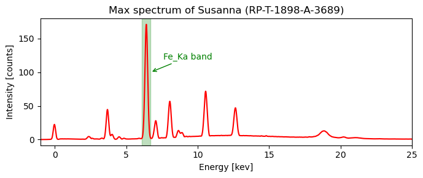
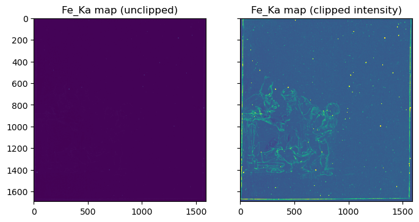
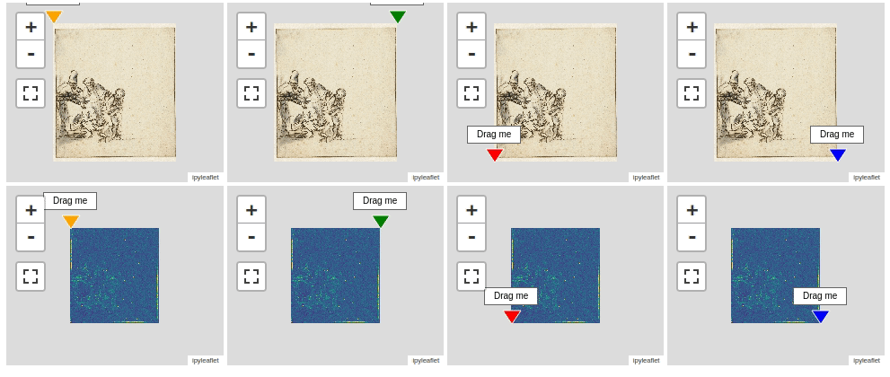
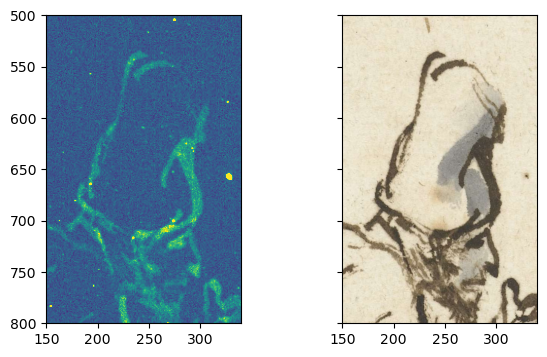

from maxrf4u import DataStackSpatial versus spectral
Lasagna versus spaghetti
In the previous sections we have converted and calibrated the original .raw spectral image data file into an analysis ready .datastack file. We will now gently start to learn how this three dimensional data cube is structured. Basically there are two ways to look at this data. One perspective is to think of the data cube as a stack of gray scale images. Every image has a different energy associated with it. If you remember from the previous section, these energies are the X-ray photon energies, expressed in kilo electron Volts (keV). Each image in the stack contains a distribution of intensities (photon counts). This is the lasagna view.
Another way to think of the same data cube is to describe it as a rectangular bundle of spectra. At each spatial (x,y) location the data cube contains a spectrum with varying intensity along the third dimension (z) of the cube. This is the spaghetti view. We will come back to this in the next section.
Very roughly speaking, the spatial intensity distribution within a slice located at a specific peak energy band represents the spatial distribution of a certain chemical element. For a start we can take a look at the largest peak in the max spectrum. This peak in the energy range of 6.1-6.7 keV is caused by the presence of the chemical element iron in the drawing. Because it is the largest peak, is is called the Fe_Ka (alpha) peak. Without prior knowledge of XRF physics (we will get to this topic later on) we can compute peak slice map for this energy band.
To do so, we need to read the required datasets with the DataStack.read(<datapath>) method.
ds = DataStack('RP-T-1898-A-3689.datastack')
x_keVs = ds.read('maxrf_energies')
y_max = ds.read('maxrf_maxspectrum')
cube = ds.read('maxrf_cube', compute=False) # don't load into memory yet (too big)
is_iron_Ka_band = (x_keVs > 6.1) * (x_keVs < 6.7)
We can now compute the iron distribution image by averaging over intensity at each pixel in the 60 images in the Fe_Ka energy band and plot the image.
FeKa_slice = cube[:,:,is_iron_Ka_band].compute() # load only this slice into memory (takes 21 seconds)
FeKa_map = FeKa_slice.sum(axis=2) / 60 # average over number of channels in the Fe_Ka bandimport matplotlib.pyplot as pltfig, [ax, ax1] = plt.subplots(ncols=2, sharex=True, sharey=True, figsize=[8, 5])
ax.imshow(FeKa_map);
ax.set_title('Fe_Ka map (unclipped)');
ax1.imshow(FeKa_map, vmax=2);
ax1.set_title('Fe_Ka map (clipped intensity)');
On the right we see here the distribution of iron associated with the iron-gall ink that Rembrandt used, as well as bright yellow speckles caused by iron particles present in the paper background. In order to make this visible, I had to clip the image intensity. On the left we see the very same image without clipping. Due to the high intensity of the iron speckles the contrast of the ink is very low.
Image registration helper
Now, let’s compare the iron distribution map with a photo of the drawing. In order to make such a comparison we need to register the two images. Fully automated registration of images is a very important capability that is unfortunately out of scope here. Instead I have created a four point warping function warp() that will do the job if we provide the corresponding corner points of both the source and destination image. These corner points can be be generated using the interactive ImageRegistrationHelper() function as shown below. This function displays interactive map widgets with markers that need to be positioned manually to corresponding landmarks on both the source (left) and destination (right) image. in our situation it is preferred to warp the visible image onto the iron map.
Code
susanna_highres_file = 'RP-T-1898-A-3689_highres.png'
susanna_highres = plt.imread(susanna_highres_file)
src_im = susanna_highres
dst_im = np.clip(FeKa_map, a_min=0, a_max=2)from maxrf4u import ImageRegistrationHelperimreg = ImageRegistrationHelper(src_im, dst_im)
imreg.show()
To register both images you first need to drag all eight markers to pairwise corresponding locations. When positioned correctly you can print the actual positions of the markers with the .get_marker_coordinates() method.
src_points, dst_points = imreg.get_marker_coordinates();src_points = [[78.5, 204.6], [4340.1, 180.4], [4376.99, 4724.0], [110.1, 4766.3]]
dst_points = [[24.7, 7.64], [1579.0, 10.2], [1563.8, 1666.0], [8.22, 1671.92]]Given the corresponding source and destination marker points, the source image can be warped (registered) onto the destination image using the warp() function.
Code
susanna_highres_file = 'RP-T-1898-A-3689_highres.png'
susanna_highres = plt.imread(susanna_highres_file)
src_im = susanna_highres
dst_im = FeKa_map
# corner points for image registration
src_points = np.array([[78.5, 204.6], [4340.1, 180.4], [4376.99, 4724.0], [110.1, 4766.3]])
dst_points = np.array([[24.7, 7.64], [1579.0, 10.2], [1563.8, 1666.0], [8.22, 1671.92]])from maxrf4u import warpimvis_reg_highres, extent = warp(src_im, dst_im, src_points, dst_points, rgba=False)
imvis_reg, extent = warp(src_im, dst_im, src_points, dst_points, keep_scale=False, rgba=False)For future calculations we will store the registered images and their extent in our .datastack file, using the append() function. In our further analysis we can simply use the registered images with the DataStack.read() method.
from maxrf4u import appendappend(imvis_reg, 'imvis_reg', 'RP-T-1898-A-3689.datastack')
append(imvis_reg_highres, 'imvis_reg_highres', 'RP-T-1898-A-3689.datastack')
append(extent, 'imvis_extent', 'RP-T-1898-A-3689.datastack')Code
ds = DataStack('RP-T-1898-A-3689.datastack')
extent = ds.read('imvis_extent')
imvis_reg_highres = ds.read('imvis_reg_highres')
fig, [ax1, ax2] = plt.subplots(ncols=2, figsize=[7, 4], sharex=True, sharey=True)
ax1.imshow(FeKa_map, vmax=2)
ax2.imshow(imvis_reg_highres, extent=extent);
ax1.set_xlim([150, 340])
ax1.set_ylim([800, 500])
Nicely registered!
FUNCTIONS
imreg_to_datastack
def imreg_to_datastack(
src_im, dst_im, datastack_file
):
Register source image src_src onto destination image dst_im
and append imvis_reg_highres, imvis_reg and imvis_extent to datastack_file.
Returns: imvis_reg, imvis_reg_highres, extent
imreg
def imreg(
src_im, dst_im, keep_scale:bool=False
):
Use SIFT-RANSAC algorithm to register source image im_src onto a destination image dst_im.
Returns:
latlon_to_xy
def latlon_to_xy(
imshape, locations
):
Flip and exchange list with latitude-longitude locations into list of xy_points.
Returns: xy_points
xy_to_latlon
def xy_to_latlon(
imshape, xy_points:NoneType=None
):
Flip and exchange list with xy points into list of latitude-longitude locations.
If xy_points are not specified, locations of the four image corner are returned.
Returns: locations
warp
def warp(
im_src, im_dst, pts_src, pts_dst, keep_scale:bool=True, rgba:bool=True, alpha_color:list=[1, 0, 0]
):
Opencv based homographic registration. Can return transparent overlay (rgba).
Returns: im_warped, extent
ImageRegistrationHelper
def ImageRegistrationHelper(
src_im, dst_im, src_points:NoneType=None, dst_points:NoneType=None, scale_down:bool=True
):
Create interactive image registration.